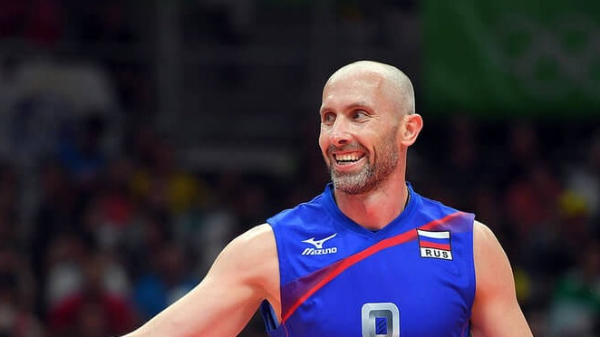

О клубе
Волейбольный клуб «Зенит» — один из ведущих профессиональных волейбольных клубов России, базирующийся в Санкт-Петербурге. Клуб известен активным участием в Чемпионате России, Кубках и международных турнирах.
История развития
Волейбольный клуб начинает свою историю в Санкт-Петербурге с попытки создать конкурентный коллектив для российского волейбола.
Клуб постепенно набирает силу, участвует в региональных и национальных чемпионатах, привлекает опытных игроков и тренеров.
«Зенит» входит в число лидеров российского волейбола, регулярно участвует в финальных турнирах национального чемпионата и кубков.
Клуб начинает активное участие в международных турнирах, знакомится с европейским уровнем волейбола. Привлекаются иностранные специалисты и игроки.
«Зенит» закрепляется в верхних строчках чемпионата и завоёвывает награды в кубковых турнирах. Команда становится одним из сильнейших коллективов в стране.
Команда продолжает развиваться, активно участвует в национальной и международной арене, привлекает молодых перспективных игроков и поддерживает высокий уровень подготовки.
Состав команды

Состав команды ВК «Зенит»:
- Сергей Петров — Диагональный, № 9
- Иван Сокол — Связующий, № 1
- Александр Морозов — Доигровщик, № 11
- Владимир Костин — Центральный блокирующий, № 15
- Максим Артёмов — Доигровщик, № 13
- Дмитрий Волков — Центральный блокирующий, № 8
- Николай Смирнов — Диагональный, № 7
- Павел Андреев — Либеро, № 12
Достижения и результаты
- Участник Чемпионата России по волейболу (серия сезонов)
- Победитель региональных кубков и турниров
- Участник международных товарищеских матчей и турниров
- Финалист кубка России (несколько сезонов)
- Заслуженный спортивный клуб Санкт-Петербурга